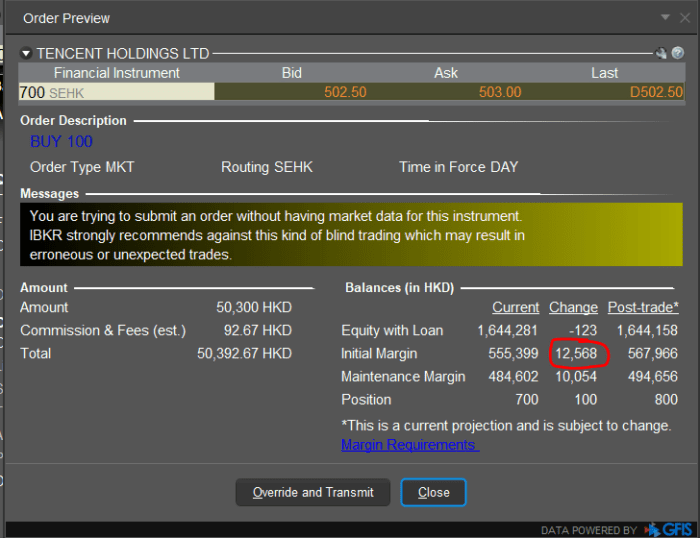

The order object is an essential piece of the TWS API which is used to both place and manage orders. This is primarily built with an ever increasing range of attributes used to create the best order possible. With that being said, the value to the right represents the required fields in order to place or reference any order. Keep in mind that there are several other attributes that can and should be referenced.
action: String. Determines whether the contract should be a BUY or SELL.
auxPrice: double. Used to determine the stop price for STP, STP LMT, and TRAIL orders.
lmtPrice: double. Used to determine the limit price for LMT, STP LMT, and TRAIL orders.
orderType: String. Specify the type of order to place. For example, MKT, LMT, STP.
tif: String. Time in force for the order. Default tif is DAY.
totalQuantity: decimal. Total size of the order.
Given additional structures for orders are ever evolving, it is recommended to review the relevant order class in your programming language for a comprehensive review of what fields are available.
Order Class ReferenceAn order can be cancelled from the API with the functions EClient.cancelOrder and EClient::reqGlobalCancel.
EClient.cancelOrder can only be used to cancel an order that was placed originally by a client with the same client ID (or from TWS for client ID 0).
EClient.reqGlobalCancel will cancel all open orders, regardless of how they were originally placed.
orderId: int. Specify which order should be cancelled by its identifier.
orderCancel: orderCancel. An OrderCancel object that can receive the manualOrderCancelTime, manualOrderIndicator, and extOperator fields. See OrderCancel Reference for more insight on the OrderCancel class.
)
Cancels an active order placed by from the same API client ID.
Note: API clients cannot cancel individual orders placed by other clients. Only reqGlobalCancel is available.
self.cancelOrder(orderId, OrderCancel())
This method will cancel ALL open orders including those placed directly from TWS.
orderCancel: orderCancel. An OrderCancel object that can receive the manualOrderCancelTime, manualOrderIndicator, and extOperator fields. See OrderCancel Reference for more insight on the OrderCancel class.
)
self.reqGlobalCancel(OrderCancel())
Options are exercised or lapsed from the API with the function EClient.exerciseOptions.
tickerId: int. Exercise request’s identifier
contract: Contract. the option Contract to be exercised.
exerciseAction: int. Set to 1 to exercise the option, set to 2 to let the option lapse.
exerciseQuantity: int. Number of contracts to be exercised
account: String. Destination account
ovrd: int. Specifies whether your setting will override the system’s natural action.
Set to 1 to override, set to 0 not to.
For example, if your action is “exercise” and the option is not in-the-money, by natural action the option would not exercise. If you have override set to “yes” the natural action would be overridden and the out-of-the money option would be exercised.
manualOrderTime: String. Specify the time at which the options should be exercised. An empty string will assume the current time.
Required TWS API 10.26 or higher.
)
Exercises an options contract.
Note: this function is affected by a TWS setting which specifies if an exercise request must be finalized.
self.exerciseOptions(5003, contract, 1, 1, self.account, 1, "")
The minimum increment is the minimum difference between price levels at which a contract can trade. Some trades have constant price increments at all price levels. However some contracts have difference minimum increments on different exchanges on which they trade and/or different minimum increments at different price levels. In the contractDetails class, there is a field ‘minTick’ which specifies the smallest possible minimum increment encountered on any exchange or price. For complete information about minimum price increment structure, there is the IB Contracts and Securities search site, or the API function EClient.reqMarketRule.
The function EClient.reqContractDetails when used with a Contract object will return contractDetails object to the contractDetails function which has a list of the valid exchanges where the instrument trades. Also within the contractDetails object is a field called marketRuleIDs which has a list of “market rules”. A market rule is defined as a rule which defines the minimum price increment given the price. The market rule list returned in contractDetails has a list of market rules in the same order as the list of valid exchanges. In this way, the market rule ID for a contract on a particular exchange can be determined.
With the market rule ID number, the corresponding rule can be found with the API function EClient.reqMarketRule. The rule is returned to the function EWrapper.marketRule.
marketRuleId: int. The id of market rule
)
Requests details about a given market rule. The market rule for an instrument on a particular exchange provides details about how the minimum price increment changes with price.
A list of market rule ids can be obtained by invoking EClient.reqContractDetails on a particular contract. The returned market rule ID list will provide the market rule ID for the instrument in the correspond valid exchange list in contractDetails.
self.reqMarketRule(26)
marketRuleId: int. Market Rule ID requested.
priceIncrements: PriceIncrement[]. Returns the available price increments based on the market rule.
)
Returns minimum price increment structure for a particular market rule ID market rule IDs for an instrument on valid exchanges can be obtained from the contractDetails object for that contract
def marketRule(self, marketRuleId: int, priceIncrements: ListOfPriceIncrements):
print("Market Rule ID: ", marketRuleId)
for priceIncrement in priceIncrements:
print("Price Increment.", priceIncrement)
For EEA investment firms required to comply with MiFIR reporting, and who have opted in to Enriched and Delegated Transaction Reporting, we have added four new order attributes to the Order class, and several new presets to TWS and IB Gateway Global Configuration.
New order attributes include:
New TWS and IB Gateway Order Presets can be found in the Orders > MiFIR page of Global Configuration, and include TWS Decision-Maker Defaults, API Decision-Maker Defaults, and Executing Trader/Algo presets.
The following choices are available for the “investment decision within the firm” IBApi.Order.Mifid2DecisionMaker and IBApi.Order.Mifid2DecisionAlgo attributes:
You can configure the preset to indicate this via TWS Global Configuration using the Orders > MiFIR page. In this scenario, the orders for the proprietary account will need to be placed via TWS.
NOTE: Only ONE investment decision-maker, either a primary person or algorithm, should be provided on an order, or selected as the default.
The following choices are available for “execution within the firm” IBApi.Order.Mifid2ExecutionTrader and IBApi.Order.Mifid2ExecutionAlgo attributes:
For more information, or to obtain short codes for persons or algos defined in IB Account Management, please contact IB Client Services.
To find out more about the MiFIR transaction reporting obligations, see the MiFIR Enriched and Delegated Transaction Reporting for EEA Investment Firms knowledge base article.
Modification of an API order can be done if the API client is connected to a session of TWS with the same username of TWS and using the same API client ID. The function EClient.placeOrder can then be called with the same fields as the open order, except for the parameter to modify. This includes the Order.OrderId, which must match the Order.OrderId of the open order. It is not generally recommended to try to change order fields aside from order price, size, and tif (for DAY -> IOC modifications). To change other parameters, it might be preferable to instead cancel the open order, and create a new one.
Orders are submitted via the EClient.placeOrder method.
Immediately after an order is submitted correctly, the TWS will start sending events concerning the order’s activity via EWrapper.openOrder and EWrapper.orderStatus
Advisors executing allocation orders will receive execution details and commissions for the allocation order itself. To receive allocation details and commissions for a specific subaccount EClient.reqExecutions can be used.
An order can be sent to TWS but not transmitted to the IB server by setting the Order.Transmit flag in the order class to False. Untransmitted orders will only be available within that TWS session (not for other usernames) and will be cleared on restart. Also, they can be cancelled or transmitted from the API but not viewed while they remain in the “untransmitted” state.
id: int. The order’s unique identifier. If a new order is placed with an order ID less than or equal to the order ID of a previous order an error will occur.
contract: Contract. The order’s contract
order: Order. The order object.
)
Places or modifies an order.
self.placeOrder(orderId, contract, order)
Users are able to bracket their order in two distinct ways:
Adding a profit taker and stop loss from the same order object automated the order bracket process so that only order ID needs to be provided. This is best for users looking to trade with identical bracket parameters across orders.
A profit taker can be added to an order using the ptOrderId and ptOrderType Order attributes.
PtOrderId must be a unique order identifier.
Consider using EWrapper.NextValidId
PtOrderType must always be set to “PRESET”.
Be sure to review your Presets in Trader Workstation prior to submitting orders as the Profit taker details will mirror these details as set.
order = Order() order.orderId = 10000 order.action = "BUY" order.orderType = "LMT" order.totalQuantity = 100 order.lmtPrice = 256 order.tif = "DAY" order.ptOrderType = "PRESET" order.ptOrderId = 10001
A stop loss can be added to an order using the slOrderId and slOrderType Order attributes.
SlOrderId must be a unique order identifier.
Consider using EWrapper.NextValidId
SlOrderType must always be set to “PRESET”.
Be sure to review your Presets in Trader Workstation prior to submitting orders as the Stop loss details will mirror these details as set.
order = Order() order.orderId = 10000 order.action = "BUY" order.orderType = "LMT" order.totalQuantity = 100 order.lmtPrice = 256 order.tif = "DAY" order.slOrderType = "PRESET" order.slOrderId = 10002
A user may create an order for a combination of symbols, referred to as a Spread or Combo, by the use of a Spread Contract.
Spreads may be priced on a per-leg basis or a complete order.
Combination orders may be priced per-leg with no more than 2 legs in a NonGuaranteed order. This is accomplished with the OrderComboLeg class and defining a price in each object. The OrderComboLeg should then be added to the Order object’s OrderComboLegs attribute in an array.
order = Order() order.orderType = "LMT" orderLeg1 = OrderComboLeg() orderLeg1.price = 222 orderLeg2 = OrderComboLeg() orderLeg2.price = 333 order.orderComboLegs = [orderLeg2, orderLeg1]
To price an overall order, users would only need to define the lmtPrice or auxPrice values within the Order object as they would if trading an individual contract.
order = Order() order.orderType = "LMT" order.lmtPrice = 555
In the event a user would like to designate a trade to take place during the Overnight trading hours, the Order object must set “includeOvernight” set to True and optionally set the Exchange value to OVERNIGHT.
Users that would like to route orders to Overnight without trading during the regular session must set the Order Object’s includeOvernight value as True and designate the exchange value as “OVERNIGHT”.
order = Order() order.exchange = "OVERNIGHT" order.includeOvernight = True
Users that would like to route orders to Overnight+DAY to trade during the day and the overnight session must set the Order Object’s includeOvernight value as True and designate the exchange value as “SMART”.
order = Order() order.exchange = "SMART" order.includeOvernight = True
By default, the Trader Workstation implements several precautionary settings that will notify customers of potential order risks to make sure users are well informed before transmitting orders. As a result, customers will typically need to acknowledge a precautionary message and manually transmit the orders through the Trader Workstation. These precautionary messages may be disabled if the user is comfortable and aware of the behavior they are disabling.
When placing orders via the API and building a robust trading system, it is important to monitor for callback notifications, specifically for IBApi::EWrapper::error, IBApi::EWrapper::orderStatus changes, IBApi::EWrapper::openOrder warnings, and IBApi::EWrapper::execDetails to ensure proper operation.
If you experience issues with orders you place via the API, such as orders not filling, the first thing to check is what these callbacks returned. Your order may have been rejected or cancelled. If needed, see the API Log section, for information on obtaining your API logs or submitting them for review.
Common cases of order rejections, cancellations, and warnings, and the corresponding message returned:
The TWS API supports the ability to pre-borrow shares for shorting.
To place a Pre-Borrow order, users must:
contract = Contract() contract.symbol = symbol contract.secType = "SBL" contract.exchange = "PREBORROW" contract.currency = "USD" order = Order() order.action = "BUY" order.orderType = "MKT" order.totalQuantity = quantity
From the API it is possible to check how a specified trade execution is expected to change the account margin requirements for an account in real time. This is done by creating an Order object which has the IBApi.Order.WhatIf flag set to true. By default, the whatif boolean in Order has a false value, but if set to True in an Order object with is passed to IBApi.EClient.placeOrder, instead of sending the order to a destination the IB server it will undergo a credit check for the expected post-trade margin requirement. The estimated post-trade margin requirement is returned to the IBApi.OrderState object in the EWrapper.openOrder callback..
This is equivalent to creating a order ticket in TWS, clicking “Preview”, and viewing the information in the “Margin Impact” panel.
For example, most users want to check the margin details or available leverage of the order. Here is the example of checking the Initial Maintenance Margin Change.
Python:
def openOrder(self, orderId: OrderId, contract: Contract, order: Order, orderState: OrderState):
print(orderId, contract, order, orderState.initMarginChange)
.
.
.
order.whatIf = True
.
.
.
self.placeOrder(order_id, contract, order)Expected output:
210 152791428,700,STK,,0,?,,SEHK,,HKD,700,700,False,,,,combo: 210,1,1832692965: MKT BUY 100@0 DAY 12567.5
You can see that 12567.5 is the initMarginChange which matches the Initial Margin Change result shown in TWS Order Ticket Preview.

Apart from InitMarginChange, there are other supported variables. For details, please visit: https://www.interactivebrokers.com/campus/ibkr-api-page/twsapi-ref/#orderstate-ref
Note:
It is not recommended for users to submit lots of what-if orders. When a user submits a what-if order for margin preview only, the request is sent to IB credit system for review. In some cases, if user(s) submit lots of what-if orders, the creditman is affected. There is no clear limitation about this what-if feature. However, if you want to use this what-if feature, please:
The Trigger Method defined in the IBApi.Order class specifies how simulated stop, stop-limit, and trailling stops, and conditional orders are triggered. Valid values are:
Below is a table which indicates whether a given secType is compatible with bid/ask-driven or last-driven trigger methods (method 7 only used in iBot alerts)
| secType | Bid/Ask-driven (1, 4, 8) | Last-driven (2, 3) | Default behavior | Notes |
|---|---|---|---|---|
| STK | yes | yes | Last | The double bid/ask is used for OTC stocks |
| CFD | yes | yes | Last | |
| CFD – Index | yes | n/a | n/a | Ex IBUS500 |
| OPT | yes | yes | US OPT: Double bid/ask, Other: Last | |
| FOP | yes | yes | Last | |
| WAR | yes | yes | Last | |
| IOPT | yes | yes | Last | |
| FUT | yes | yes | Last | |
| COMBO | yes | yes | Last | |
| CASH | yes | n/a | Bid/ask | |
| CMDTY | yes | n/a | Last | |
| IND | n/a | yes | n/a | For conditions only |
Important notes :